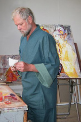

Biographie
Diplômé de l’École polytechnique et de l’École natio- nale supérieure des arts décoratifs, Hervé Loilier a été l'élève de Lucien Fontanarosa. Il est professeur d'arts plastiques à l'École polytechnique depuis 1973 et poursuit son œuvre picturale en parallèle.
Sociétaire de plusieurs grands salons parisiens, Hervé Loilier est officier des Palmes académiques et chevalier des Arts et Lettres.

PLUS D'INFO
- Biographie de l'artiste
- Demande d'information
- Newsletter